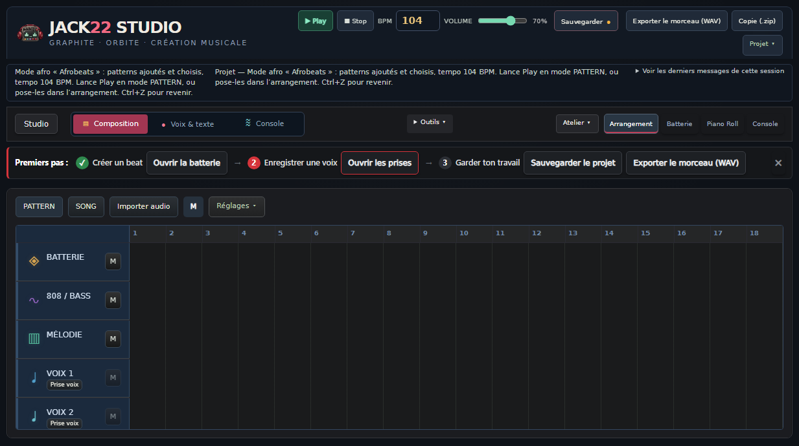
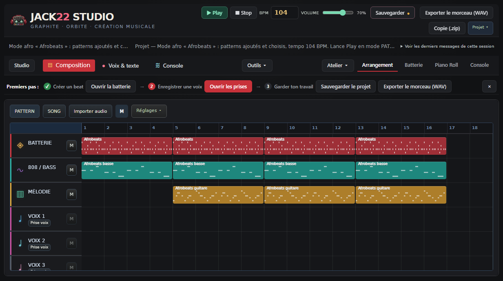
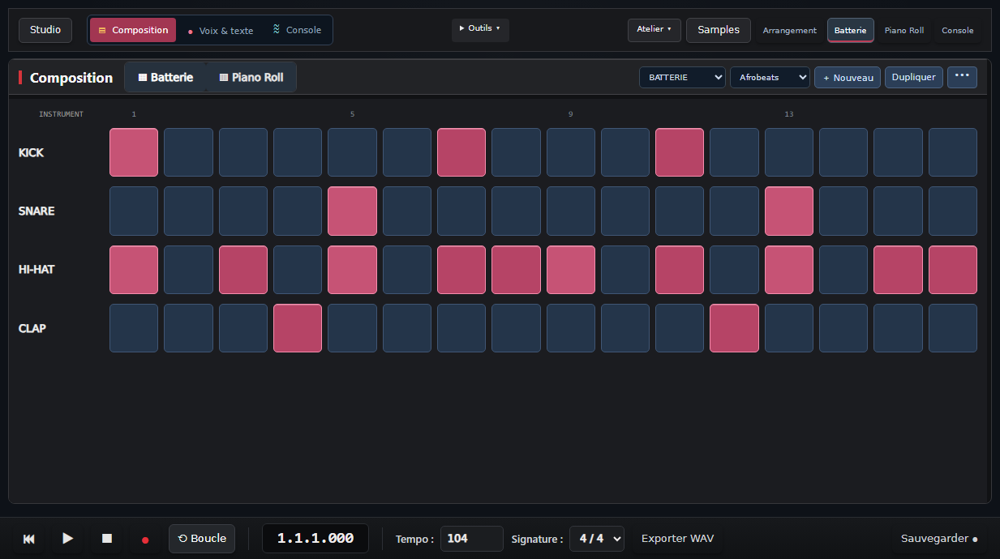
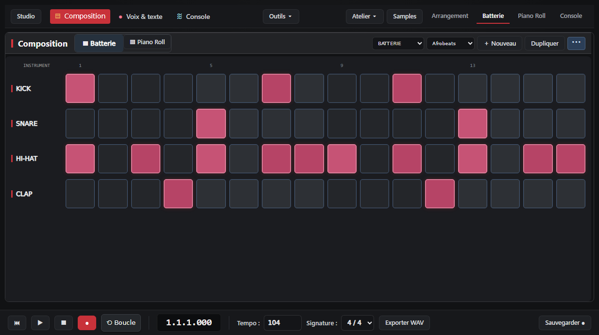
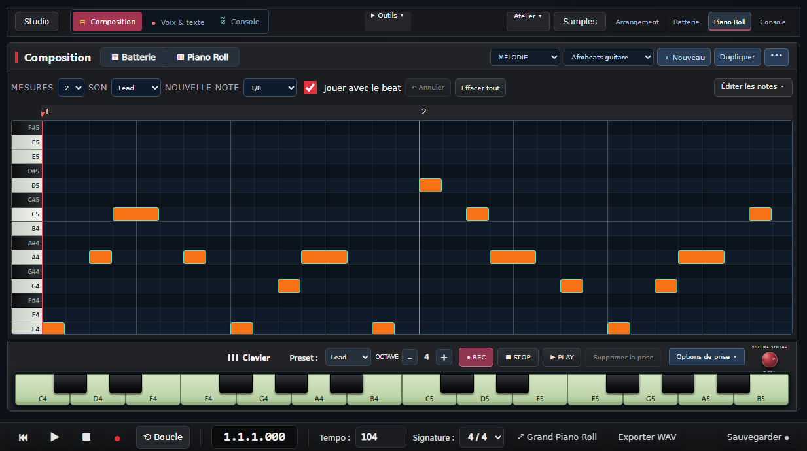
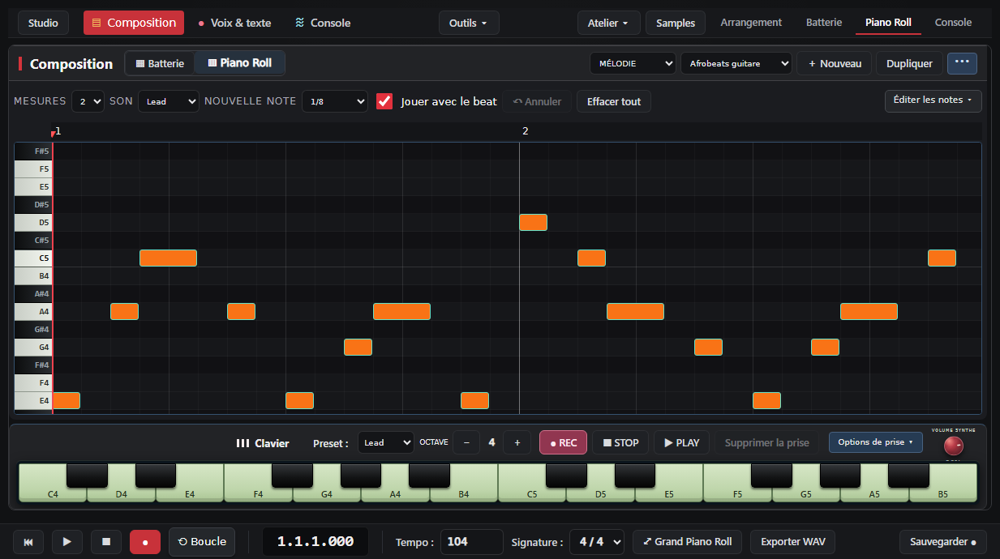
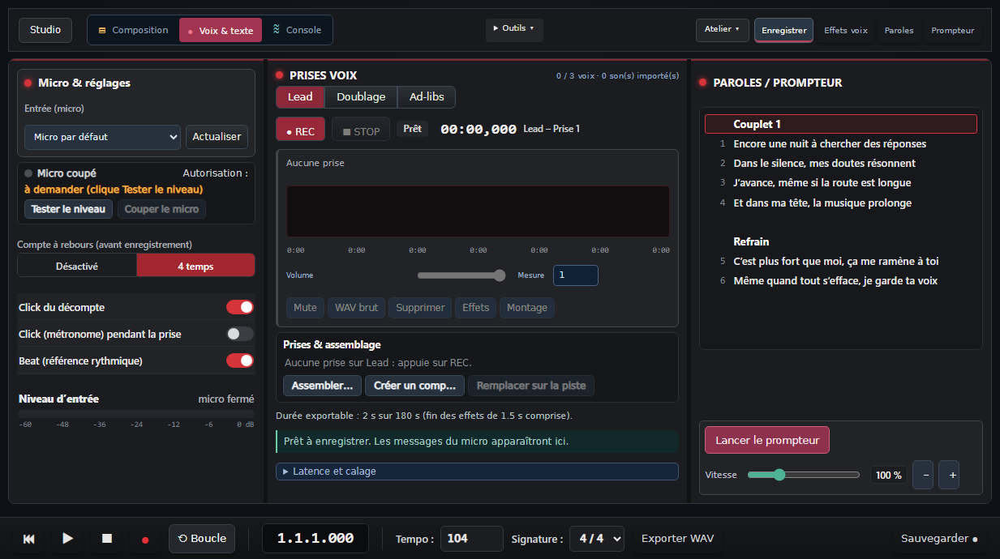
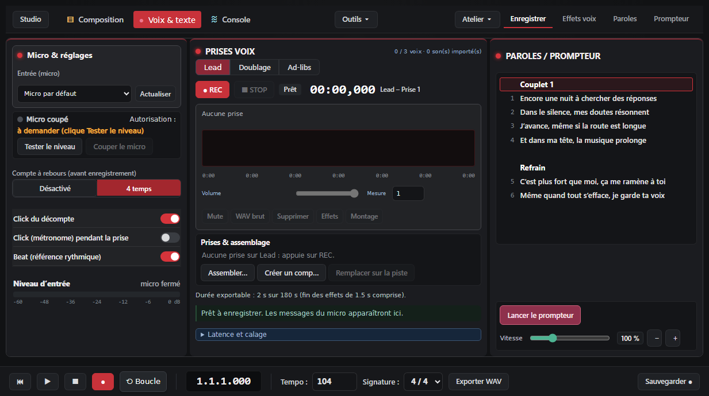
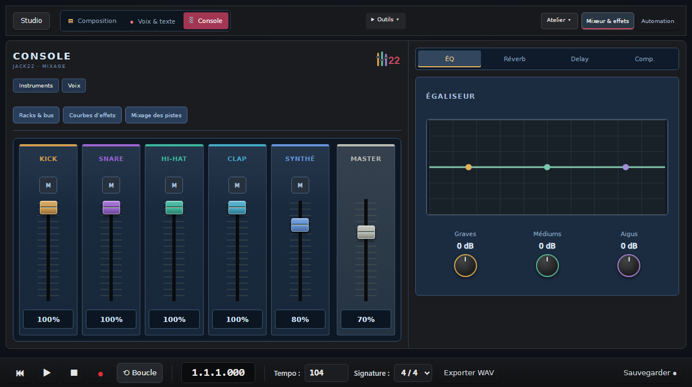
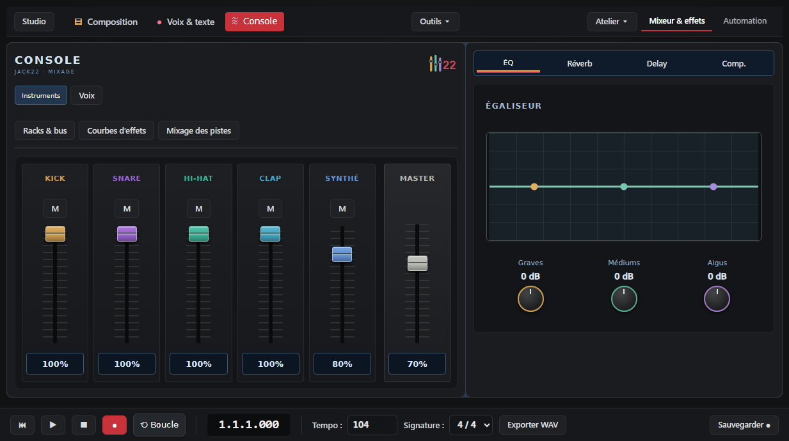

JACK22 · habillage avant / après
Captures prises par Edge 156 depuis le fichier livré, à 1233 × 690, avec le contenu de démonstration (#écran-demo). Même disposition, mêmes commandes : seul l'habillage change.
1. Studio (Arrangement)


2. Batterie


3. Piano Roll


4. Voix & texte


5. Console

